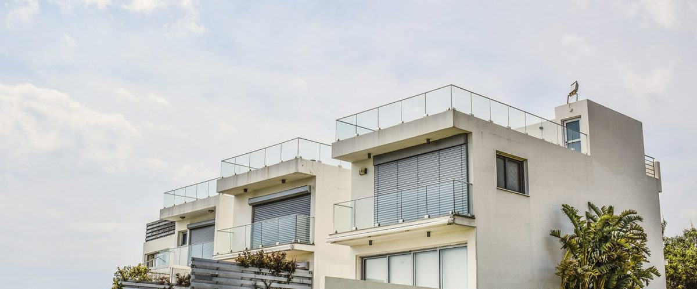
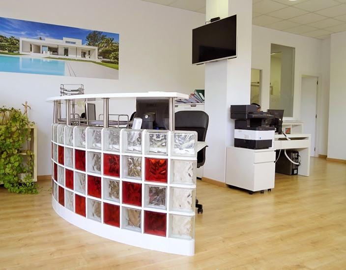

Tasación gratuita de tu vivienda en Terrassa, Rubí y el Vallès
Conocer el valor de tu vivienda es básico para venderla por un precio acorde a sus características y su ubicación. Te la tasamos sin visitas y sin demoras.

Cómo funciona
Cuatro pasos hasta la firma
Cuéntanos
Dónde está y cómo es tu vivienda.
Te la tasamos
Sin visitas y sin demoras, con datos de tu zona.
Salimos al mercado
Precio de salida, publicación y visitas.
Firmamos
Te acompañamos hasta la entrega de llaves.
Solicita tu tasación

Por qué tasar con nosotros
Un precio justo se apoya en la zona, no en una media
El precio de un piso en Pere Parres no se parece al de uno en la Zona Olímpica, y una casa en Els Avets se mueve en otro mercado que un terreno en Can Sola. Conocemos Terrassa, Rubí y el Vallès Occidental porque vendemos aquí cada semana.
Con la tasación sabrás cuánto vale tu vivienda, qué precio de salida te recomendamos y qué gastos tendrás al vender. Sin compromiso.
Preguntas frecuentes
Antes de vender
¿Cuánto cuesta vender un piso con una inmobiliaria?
Los honorarios se pactan por escrito antes de firmar el encargo de venta, así que sabes lo que vas a pagar antes de empezar. Además de los honorarios, quien vende suele afrontar la plusvalía municipal, la cancelación de la hipoteca si la hay y el certificado de eficiencia energética. En la tasación gratuita te explicamos el desglose para tu caso concreto.
¿Cómo funciona la tasación gratuita?
Nos cuentas dónde está tu vivienda y cómo es, y la tasamos sin visitas y sin demoras, con datos de mercado de tu zona. Después te llamamos para explicarte el valor y el precio de salida que te recomendamos. No tiene coste ni compromiso.
¿Cuánto tarda en venderse un piso?
Depende del precio, la zona y el estado de la vivienda. Un precio ajustado al mercado es lo que más acorta los plazos. Un cliente de Rubí cuenta en su opinión de Google que vendimos su casa en tres semanas, pero cada caso es distinto: en la tasación te damos una estimación realista.
¿Qué documentación necesito para comprar una vivienda en Terrassa?
De forma orientativa, los bancos piden DNI o NIE, las últimas nóminas o justificantes de ingresos, la última declaración de la renta, la vida laboral y los extractos de tus cuentas. Para reservar la vivienda basta con tus datos de identificación. Si quieres financiarla, empezamos por un estudio financiero para saber cuánto puedes pedir.
Lo que cuentan quienes han vendido
«La mejor solución inmobiliaria en todo el Vallès.»Gary Acosta
«Desde el primer momento sabían cuáles eran mis necesidades y aplicaron sus conocimientos del mercado inmobiliario para valorar de manera justa la vivienda y obtener el máximo beneficio. Buenos comerciales y excelentes profesionales, ¡vendieron mi casa en tres semanas!»Joan Casanova · Rubí
«Excelentes profesionales con un trato personal muy cercano. La venta de mi piso fue muy rápida y efectiva. Estuve informada y asesorada en todo momento. Me hicieron sentir muy tranquila. Una experiencia fantástica y un servicio impecable.»Yolanda Cifuentes · Terrassa